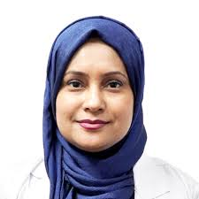

#1. Prof. Dr. Azmeri Sultana

MBBS, DCH, MCPS, FCPS (CHILD), FRCP (GLASGOW)
Fellowship in Pediatric Nephrology (Singapore), Critical Care Nephrology (USA)
Newborn, Child Diseases & Child Kidney Specialist
Professor, Pediatrics
Dr. MR Khan Shishu Hospital & Institute of Child Health
Labaid Diagnostic, Malibagh
Address: Address: House # B65, Chowdhury Para, Malibagh, Dhaka
Visiting Hour: Visiting Hour: 7pm to 9pm (Closed: Friday)
Appointment: +8801766662555
#2. Asso. Prof. Dr. Kuntal Roy
MBBS, DCH, MCPS, FCPS (CHILD), MD (PAEDIATRICS)
Newborn, Adolescent & Child Diseases Specialist
Associate Professor, Pediatrics
Anwer Khan Modern Medical College & Hospital
Consultant, Bangadesh Bank, Dhaka
Medinova Medical Services, Malibagh
Address: Gemcon Business Tower, 255 New Circular Road, Malibagh, Dhaka
Visiting Hour: 7pm to 9pm (Closed: Friday)
Appointment: +8801716410062, +8801790118855
#3. Dr. Chaity Barua
MBBS, BCS (Health), FCPS (Pediatrics), MD (Pediatric Cardiology)
Newborn, Child Diseases & Child Cardiology Specialist
Assistant Professor (Pediatric Cardiology)
Bangabandhu Sheikh Mujib Medical University Hospital
Medinova Medical Services, Malibagh
Address: Gemcon Business Tower, 255 New Circular Road, Malibagh, Dhaka
Visiting Hour: 7pm to 9pm (Sat, Sun, Tue & Thu)
Appointment: +8801716410062